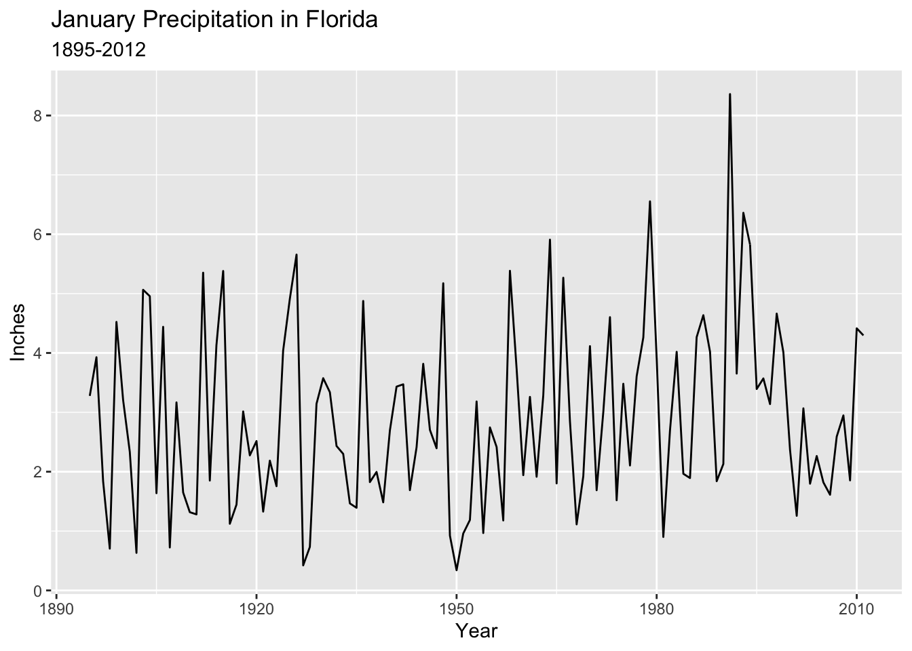

Tuesday, September 6, 2022
Today
- Getting data into R
- Data frames
- Quantiles
- Pipes
More information about how to use RStudio and markdown files is available here: https://www.pipinghotdata.com/posts/2020-09-07-introducing-the-rstudio-ide-and-r-markdown/
Getting data into R
You need to know two thing: (1) where the data are located, and (2) what type of data file is it.
Consider the file US.txt located in your project folder. It is in the same folder as this file (05-Lesson.Rmd). Click on the file name. It opens a file tab that shows a portion of the file.
It is a file with the column headings Year, All, MUS, G, FL, E. Each row is a year and the count is the number of hurricanes making landfall in the United States. All indicates anywhere in the continental U.S, MUS indicates at major hurricane intensity (at least 33 m/s). Each column is separated by a space.
To create a data object you use the read.table() function. The two arguments to this function are file = and header =.
You put the name of the file in quotes. And set the header argument to TRUE since the first row in the file is not data.
LH.df <- read.table(file = "data/US.txt",
header = TRUE)An data object called LH.df is now in your Environment under Data.
In this case the file name is simple because US.txt is in the same directory as your Rmd file.
Data files for an analysis are often kept somewhere else. Here for example note the folder called data? Click on the folder name. To read the data from that location you need to change file string name to "data/US.txt".
LH.df <- read.table(file = "data/US.txt",
header = TRUE)The file = argument is where R looks for your data. The header = argument tells R that the first row is not data but instead column names.
If you get an error message it is likely because the data file is not where you think it is.
If your file has comma’s between columns then use the argument sep = "," in the function.
Note: No changes are made to your original data file.
If there are missing values in the data file they should be coded as NA. If they are coded as something else then you specify the coding with the na.strings = argument. For example, if the missing value character in our file is coded as 99, you specify na.strings = "99".
There are variants of read.table() that differ only in the default argument settings. read.csv() has settings that are suitable for comma delimited (csv) files that have been exported from a spreadsheet.
A typical work flow might be to export data from a spreadsheet using the csv file format then import it to R using the read.csv() function.
You import data from the web by specifying the URL instead of the local file name.
loc <- "http://myweb.fsu.edu/jelsner/temp/data/US.txt"
LH.df <- read.table(file = loc,
header = TRUE)Recall that you reference the columns using the $ syntax. For example, type
LH.df$FL## [1] 1 2 0 0 0 1 0 0 0 0 0 0 0 0 1 0 0 0 0 1 2 0 2 1 0 1 2 1 0 3 0 2 0 0 0 3 1
## [38] 2 0 0 0 0 1 2 0 3 1 1 1 0 1 0 1 0 0 2 0 0 1 1 1 0 0 0 1 2 1 0 1 0 1 0 0 2
## [75] 1 2 0 2 1 0 0 0 2 2 2 1 0 0 1 0 1 2 0 1 2 1 2 2 1 2 0 0 1 0 0 1 0 0 0 1 0
## [112] 0 0 3 1 2 1 1 0 0 0 1 0 0 1 0 0 0 1 0 0 0 0 0 2 0 1 0 1 0 0 1 0 0 2 0 0 2
## [149] 1 0 0 0 0 4 3 0 0 0 0 0 0 0 0 0 0 1sum(LH.df$FL)## [1] 110The number of years with 0, 1, 2, … Florida hurricanes is obtained by typing
table(LH.df$FL)##
## 0 1 2 3 4
## 93 43 24 5 1There are 93 years without a FL hurricane, 43 years with one hurricanes, 24 years with two hurricanes, and so on.
Data frames
The functions read.table() and read.csv() import data into our environment as a data frame. For example, LH.df is a data frame. You see the data object is a data frame in your Environment.
A data frame is like a spreadsheet. Values are arranged in rows and columns. Rows are the cases (observations) and columns are the variables.
The dim() function returns the size of the data frame in terms of how many rows (first number) and how many columns.
dim(LH.df)## [1] 166 6There are 166 rows and 6 columns in the data frame.
Note the use of inline code. Open with a single back tick (grave accent) followed by the letter r and close with a single back tick. Inline code allows content in your report to be dynamic. There is no need to retype values when the data changes. Open 05-Lesson.html in a browser.
To list the first six lines of the data object, type
head(LH.df)## Year All MUS G FL E
## 1 1851 1 1 0 1 0
## 2 1852 3 1 1 2 0
## 3 1853 0 0 0 0 0
## 4 1854 2 1 1 0 1
## 5 1855 1 1 1 0 0
## 6 1856 2 1 1 1 0The columns include year, number of hurricanes, number of major hurricanes, number of Gulf coast hurricanes, number of Florida hurricanes, and number of East coast hurricanes in order. Column names are printed as well.
The last six lines of the data frame are listed similarly using the tail() function. The number of lines listed is changed using the argument n =.
tail(LH.df, n = 3)## Year All MUS G FL E
## 164 2014 1 0 0 0 1
## 165 2015 0 0 0 0 0
## 166 2016 2 0 0 1 1The number of years in the record is assigned to the object nY and the annual average number of hurricanes (rate) is assigned to the object rate.
nY <- length(LH.df$All)
rate <- mean(LH.df$All)By typing the names of the saved objects, the values are printed.
nY## [1] 166rate## [1] 1.668675Thus over the 166 years of data the average number of hurricanes per year is 1.67.
If you want to change the names of the columns in the data frame, type
names(LH.df)[4] <- "GC"
names(LH.df)## [1] "Year" "All" "MUS" "GC" "FL" "E"This changes the 4th column name from G to GC. Note that this change occurs to the data frame in R and not to your original data file.
You will work almost exclusively with data frames. A data frame has rows and columns.
- Columns have names
- Columns are vectors
- Columns must be of the same length
- Columns must be of the same data type
Each element is indexed by a row number and a column number in that order and separated by a comma. So if df is a data frame then df[2, 3] is the second row of the third column.
To print the second row of the first column of the data frame LH.df you type
LH.df[2, 1]## [1] 1852If you want all the values in a column, you leave the row number blank.
LH.df[ , 1]## [1] 1851 1852 1853 1854 1855 1856 1857 1858 1859 1860 1861 1862 1863 1864 1865
## [16] 1866 1867 1868 1869 1870 1871 1872 1873 1874 1875 1876 1877 1878 1879 1880
## [31] 1881 1882 1883 1884 1885 1886 1887 1888 1889 1890 1891 1892 1893 1894 1895
## [46] 1896 1897 1898 1899 1900 1901 1902 1903 1904 1905 1906 1907 1908 1909 1910
## [61] 1911 1912 1913 1914 1915 1916 1917 1918 1919 1920 1921 1922 1923 1924 1925
## [76] 1926 1927 1928 1929 1930 1931 1932 1933 1934 1935 1936 1937 1938 1939 1940
## [91] 1941 1942 1943 1944 1945 1946 1947 1948 1949 1950 1951 1952 1953 1954 1955
## [106] 1956 1957 1958 1959 1960 1961 1962 1963 1964 1965 1966 1967 1968 1969 1970
## [121] 1971 1972 1973 1974 1975 1976 1977 1978 1979 1980 1981 1982 1983 1984 1985
## [136] 1986 1987 1988 1989 1990 1991 1992 1993 1994 1995 1996 1997 1998 1999 2000
## [151] 2001 2002 2003 2004 2005 2006 2007 2008 2009 2010 2011 2012 2013 2014 2015
## [166] 2016You can also reference the column by name LH.df$Year.
Data frames have two indexes indicating the rows and columns in that order.
LH.df[10, 4]## [1] 3To a statistician a data frame is a table of observations. Each row contains one observation. Each observation must contain the same variables. These variables are called columns, and you can refer to them by name. You can also refer to the contents of the data frame by row number and column number (like a matrix).
To an Excel user a data frame is a worksheet (or a range within a worksheet). A data frame is more restrictive in that each column can only be of one data type (e.g., character, numeric, etc).
As an example, consider monthly precipitation from the state of Florida. Source: Monthly climate series. http://www.esrl.noaa.gov/psd/data/timeseries/. Get monthly precipitation values for the state back to the year 1895. Copy/paste into a text editor (notepad) then import using the read.table() function.
Here I did it for Florida and put the file on my website. Missing values are coded as -9.900 so you add the argument na.string = "-9.900" to the function.
loc <- "http://myweb.fsu.edu/jelsner/temp/data/FLprecip.txt"
FLp.df <- read.table(loc,
header = TRUE,
na.string = "-9.900")Plot a time series graph.
library(ggplot2)
ggplot(data = FLp.df, aes(x = Year, y = Jan)) +
geom_line() +
ylab("Inches") +
ggtitle(label = "January Precipitation in Florida",
subtitle = "1895-2012")
A minimal, complete, reproducible example.
Quantiles
The median value cuts a set of ordered data values into two equal parts. Values larger than the median and values less than the median. The ordering comes from arranging the data from lowest to highest.
Quantiles cut a set of ordered data into arbitrary number of equal-sized parts. The quantile corresponding to cutting the data into two halves is called the median. Fifty percent of the data have values less than or equal to the median value. The median is the 50th percentile (.5 quantile).
Quantiles corresponding to cutting the ordered data into quarters are called quartiles. The lower (first) quartile cuts the data into the lower 25% and upper 75% of the data. The lower quartile is the .25 quantile or the 25th percentile indicating that 25% of the data have values less than this quantile value.
Correspondingly, the upper (third) quartile corresponding to the .75 quantile (75th percentile), indicates that 75% of the data have values less than this quantile value.
The quantile() function calculates quantiles on a vector of data. For example, consider Florida precipitation for the month of June. First apply the sort() function on the June values (column indicated by the label Jun).
sort(FLp.df$Jun)## [1] 2.303 2.445 3.292 3.643 3.673 3.898 3.908 4.089 4.202 4.401
## [11] 4.500 4.598 4.739 4.747 4.820 4.838 4.965 5.098 5.099 5.160
## [21] 5.182 5.221 5.321 5.349 5.362 5.422 5.440 5.531 5.588 5.602
## [31] 5.607 5.614 5.696 5.718 5.724 5.752 5.803 5.866 5.887 5.896
## [41] 5.931 5.971 5.998 6.142 6.147 6.171 6.220 6.258 6.269 6.281
## [51] 6.351 6.392 6.392 6.470 6.540 6.541 6.591 6.739 6.789 6.900
## [61] 6.991 6.998 7.002 7.009 7.012 7.049 7.057 7.098 7.118 7.208
## [71] 7.306 7.348 7.450 7.451 7.481 7.666 7.707 7.748 7.876 8.000
## [81] 8.040 8.158 8.168 8.243 8.317 8.378 8.389 8.432 8.488 8.578
## [91] 8.663 8.874 8.880 8.940 8.969 8.976 9.106 9.308 9.349 9.481
## [101] 9.734 9.865 9.939 9.993 10.032 10.276 10.280 10.288 10.309 10.360
## [111] 10.529 10.858 11.014 11.228 11.824 12.034 12.379Again, note the use of the dollar sign to indicate the column in the data frame.
To find the 50th percentile you use the median() function directly or the quantile() function and specify the quantile with the probs = argument.
median(FLp.df$Jun)## [1] 6.789quantile(FLp.df$Jun,
probs = .5)## 50%
## 6.789To retrieve the 25th and 75th percentile values
quantile(FLp.df$Jun,
probs = c(.25, .75))## 25% 75%
## 5.602 8.432Of the 117 monthly precipitation values, 25% of them are less than 5.6 inches, 50% are less than 6.79 inches.
Thus there are an equal number of years with June precipitation between 5.6 and 6.79 inches.
The difference between the first and third quartile values is called the interquartile range (IQR). Fifty percent of the data values lie within the IQR. The IQR is obtained using the IQR() function.
Another example: Consider the set of North Atlantic Oscillation (NAO) index values for the month of June from the period 1851–2010. The NAO is a variation in the climate over the North Atlantic Ocean featuring fluctuations in the difference of atmospheric pressure at sea level between the Iceland and the Azores.
The index is computed as the difference in standardized sea-level pressures. The standardization is done by subtracting the mean and dividing by the standard deviation. The index has units of standard deviation.
First read the data consisting of monthly NAO values, then list the column names and the first few data lines.
loc <- "http://myweb.fsu.edu/jelsner/temp/data/NAO.txt"
NAO.df <- read.table(loc,
header = TRUE)
head(NAO.df)## Year Jan Feb Mar Apr May Jun Jul Aug Sep Oct Nov Dec
## 1 1851 3.29 1.03 1.50 -1.66 -1.53 -1.62 -5.39 4.68 1.85 0.78 -1.77 1.74
## 2 1852 1.46 0.41 -2.50 -1.60 0.25 0.09 -1.13 2.94 -2.02 -1.65 -0.93 1.03
## 3 1853 1.31 -4.04 -0.32 0.76 -3.17 1.09 1.76 -2.36 -0.22 -0.47 0.51 -4.28
## 4 1854 1.28 1.72 2.67 0.88 0.04 -0.06 -1.92 -0.03 2.62 1.11 -1.56 2.42
## 5 1855 -1.84 -3.80 -0.05 0.99 -2.28 0.78 -2.61 3.81 0.79 -1.09 -2.42 -1.66
## 6 1856 -1.25 -0.10 -2.27 2.00 -0.70 2.03 -0.16 -0.44 -0.50 1.12 -1.69 -0.23Determine the 5th and 95th percentile values for the month of June.
quantile(NAO.df$Jun,
prob = c(.05, .95))## 5% 95%
## -2.808 1.891The summary() function provides summary statistics for each column in your data frame. The statistics include output the mean, median, minimum, maximum, along with the first quartile and third quartile values.
summary(FLp.df)## Year Jan Feb Mar Apr
## Min. :1895 Min. :0.340 Min. :0.288 Min. :0.496 Min. :0.408
## 1st Qu.:1924 1st Qu.:1.798 1st Qu.:2.009 1st Qu.:2.142 1st Qu.:1.659
## Median :1953 Median :2.696 Median :3.099 Median :3.349 Median :2.677
## Mean :1953 Mean :2.916 Mean :3.164 Mean :3.663 Mean :2.926
## 3rd Qu.:1982 3rd Qu.:4.010 3rd Qu.:4.171 3rd Qu.:5.097 3rd Qu.:4.163
## Max. :2011 Max. :8.361 Max. :8.577 Max. :8.701 Max. :7.457
## May Jun Jul Aug
## Min. :0.900 Min. : 2.303 Min. : 4.050 Min. : 4.053
## 1st Qu.:2.483 1st Qu.: 5.602 1st Qu.: 6.427 1st Qu.: 6.164
## Median :3.758 Median : 6.789 Median : 7.522 Median : 7.102
## Mean :3.845 Mean : 7.046 Mean : 7.505 Mean : 7.345
## 3rd Qu.:4.765 3rd Qu.: 8.432 3rd Qu.: 8.358 3rd Qu.: 8.310
## Max. :9.848 Max. :12.379 Max. :11.263 Max. :13.090
## Sep Oct Nov Dec
## Min. : 2.126 Min. :0.471 Min. :0.370 Min. :0.610
## 1st Qu.: 4.930 1st Qu.:2.479 1st Qu.:1.370 1st Qu.:1.549
## Median : 6.680 Median :3.541 Median :2.139 Median :2.558
## Mean : 6.704 Mean :3.803 Mean :2.308 Mean :2.718
## 3rd Qu.: 7.955 3rd Qu.:4.899 3rd Qu.:3.110 3rd Qu.:3.521
## Max. :12.978 Max. :9.556 Max. :6.236 Max. :7.668Columns with missing values get a row output from the summary() function indicating the number of them (NA’s).
Creating a data frame
The data.frame() function creates a data frame from a set of vectors.
Consider ice volume (10\(^3\) km\(^3\)) measurements from the arctic from 2002 to 2012. The measurements are taken on January 1st each year and are available from http://psc.apl.washington.edu/wordpress/research/projects/arctic-sea-ice-volume-anomaly/data/
Volume <- c(20.233, 19.659, 18.597, 18.948, 17.820,
16.736, 16.648, 17.068, 15.916, 14.455,
14.569)Since the data have a sequential order you create a data frame with year in the first column and volume in the second.
Year <- 2002:2012
Ice.df <- data.frame(Year, Volume)
head(Ice.df)## Year Volume
## 1 2002 20.233
## 2 2003 19.659
## 3 2004 18.597
## 4 2005 18.948
## 5 2006 17.820
## 6 2007 16.736What year had the minimum ice volume?
which.min(Ice.df$Volume)## [1] 10Ice.df[10, ]## Year Volume
## 10 2011 14.455Ice.df$Year[which.min(Ice.df$Volume)]## [1] 2011To change a vector to a data frame use the function as.data.frame(). For example, let counts be a vector of integers.
counts <- rpois(n = 100,
lambda = 1.66)
head(counts)## [1] 1 2 2 3 0 3H.df <- as.data.frame(counts)
head(H.df)## counts
## 1 1
## 2 2
## 3 2
## 4 3
## 5 0
## 6 3The column name in the data frame is the name of the vector.
Pipes
So far you have computed statistics on data stored as vectors (mean, median, quantiles, etc). But you often import data as data frames so you need to know how to manipulate them.
The {dplyr} package has functions (‘verbs’) that manipulate data frames in a friendly and logical way. Manipulations include, selecting columns, filtering rows, re-ordering rows, adding new columns, and summarizing data.
library(dplyr)Let’s look at these using the airquality data frame. Recall the object airquality is a data frame containing New York air quality measurements from May to September 1973. (?airquality).
head(airquality)## Ozone Solar.R Wind Temp Month Day
## 1 41 190 7.4 67 5 1
## 2 36 118 8.0 72 5 2
## 3 12 149 12.6 74 5 3
## 4 18 313 11.5 62 5 4
## 5 NA NA 14.3 56 5 5
## 6 28 NA 14.9 66 5 6dim(airquality)## [1] 153 6The columns include Ozone (ozone concentration in ppb), Solar.R (solar radiation in langleys), Wind (wind speed in mph), Temp (air temperature in degrees F), Month, and Day.
You summarize the values in each column with the summary() method.
summary(airquality)## Ozone Solar.R Wind Temp
## Min. : 1.00 Min. : 7.0 Min. : 1.700 Min. :56.00
## 1st Qu.: 18.00 1st Qu.:115.8 1st Qu.: 7.400 1st Qu.:72.00
## Median : 31.50 Median :205.0 Median : 9.700 Median :79.00
## Mean : 42.13 Mean :185.9 Mean : 9.958 Mean :77.88
## 3rd Qu.: 63.25 3rd Qu.:258.8 3rd Qu.:11.500 3rd Qu.:85.00
## Max. :168.00 Max. :334.0 Max. :20.700 Max. :97.00
## NA's :37 NA's :7
## Month Day
## Min. :5.000 Min. : 1.0
## 1st Qu.:6.000 1st Qu.: 8.0
## Median :7.000 Median :16.0
## Mean :6.993 Mean :15.8
## 3rd Qu.:8.000 3rd Qu.:23.0
## Max. :9.000 Max. :31.0
## Note that columns that have missing values are tabulated. For example, there are 37 missing ozone measurements and 7 missing radiation measurements.
Importantly you can apply the summary() function using the pipe operator (|> or %>%). The pipe operator is part of the {dplyr} package.
airquality |>
summary()## Ozone Solar.R Wind Temp
## Min. : 1.00 Min. : 7.0 Min. : 1.700 Min. :56.00
## 1st Qu.: 18.00 1st Qu.:115.8 1st Qu.: 7.400 1st Qu.:72.00
## Median : 31.50 Median :205.0 Median : 9.700 Median :79.00
## Mean : 42.13 Mean :185.9 Mean : 9.958 Mean :77.88
## 3rd Qu.: 63.25 3rd Qu.:258.8 3rd Qu.:11.500 3rd Qu.:85.00
## Max. :168.00 Max. :334.0 Max. :20.700 Max. :97.00
## NA's :37 NA's :7
## Month Day
## Min. :5.000 Min. : 1.0
## 1st Qu.:6.000 1st Qu.: 8.0
## Median :7.000 Median :16.0
## Mean :6.993 Mean :15.8
## 3rd Qu.:8.000 3rd Qu.:23.0
## Max. :9.000 Max. :31.0
## You read the pipe as THEN. “airquality data frame THEN summarize.”
The pipe operator allows us to string together a bunch of functions that makes it easy for humans to understand what was done. This is a key point. You want your code to be readable by a computer (correct syntax) but also readable to other humans.
For example, suppose the object of interest is called me and suppose there is a function called wake_up(). I could apply the function in two ways.
wake_up(me)
me |>
wake_up()The second way involves a bit more typing but it is easier for a human to read and thus it is easier to understand. This becomes clear when stringing together many functions.
For example, what happens to the result of me after the function wake_up() has been applied? How about get_out_of_bed() and the get_dressed()? Again, I can apply these functions in two ways.
get_dressed(get_out_of_bed(wake_up(me)))
me |>
wake_up() |>
get_out_of_bed() |>
get_dressed()Continuing
me |>
wake_up() |>
get_out_of_bed() |>
get_dressed() |>
make_coffee() |>
drink_coffee() |>
leave_house()Which is much better in terms of ‘readability’ then leave_house(drink_coffee(make_coffee(get_dressed(get_out_of_bed(wake_up(me)))))).
Consider again the FLp.df. How would you use the above syntax to compute the mean value of June precipitation?
You ask three questions: what function, applied to what variable, from what data frame? Answers: mean(), Jun, FLp.df. You then write the code starting with the answer to the last question first.
FLp.df |>
pull(Jun)## [1] 4.500 11.228 5.221 3.292 5.803 9.993 10.360 6.220 7.012 6.591
## [11] 5.160 8.040 6.392 6.351 6.739 10.288 4.820 12.379 5.531 4.202
## [21] 5.321 6.541 5.362 5.349 7.481 6.258 3.673 6.540 9.308 6.470
## [31] 6.281 8.168 7.450 7.057 8.158 10.858 2.303 8.378 5.182 9.865
## [41] 5.099 8.940 5.931 6.998 9.734 7.049 7.707 10.529 7.348 5.607
## [51] 8.578 7.098 9.106 3.908 8.000 4.089 4.747 3.643 7.876 5.588
## [61] 6.392 5.422 7.748 6.147 8.389 6.789 5.896 8.317 7.118 5.614
## [71] 10.032 8.880 8.488 9.939 6.142 5.866 5.602 8.432 5.887 10.276
## [81] 6.269 7.002 4.401 6.900 3.898 4.838 5.718 10.280 8.969 5.098
## [91] 7.009 7.451 5.696 4.739 8.976 5.724 7.666 12.034 4.598 9.349
## [101] 8.874 7.306 7.208 2.445 9.481 5.971 8.663 10.309 11.014 8.243
## [111] 11.824 5.752 5.998 6.991 6.171 5.440 4.965The function pull() from the {dplyr} packages pulls out the column named Jun as a vector.
Then the mean() function takes these 118 values and computes the average.
FLp.df |>
pull(Jun) |>
mean()## [1] 7.045692Note that the next function in the sequence receives the output from the previous function as its FIRST argument so the function mean() has nothing inside the parentheses.
Your turn
- Use the piping operator and compute the average wind speed in the
airqualitydata frame. - Use the piping operator and compute the 10th and 90th percentiles (lower and upper decile values) of May precipitation in Florida.